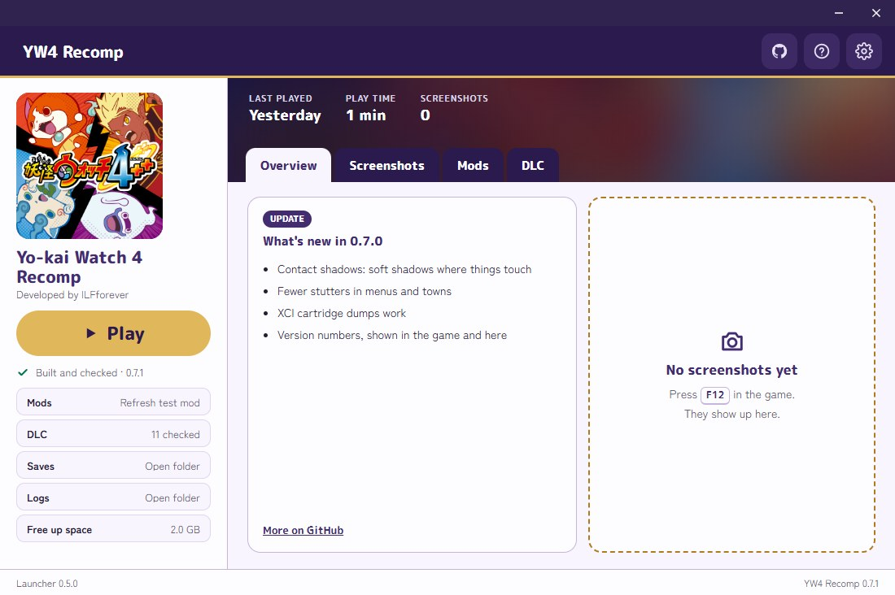
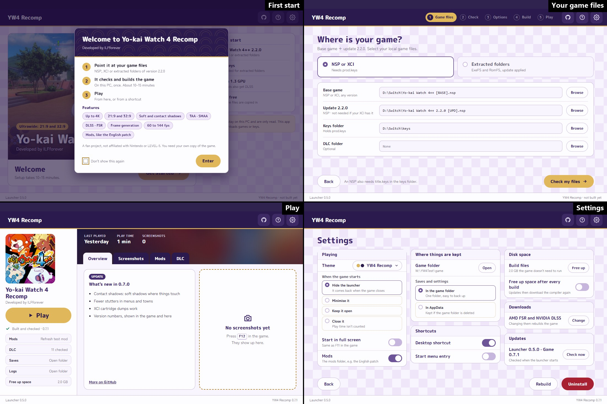
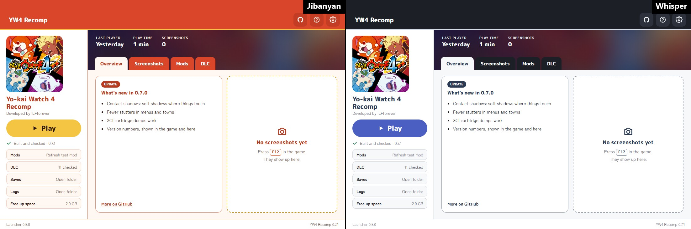
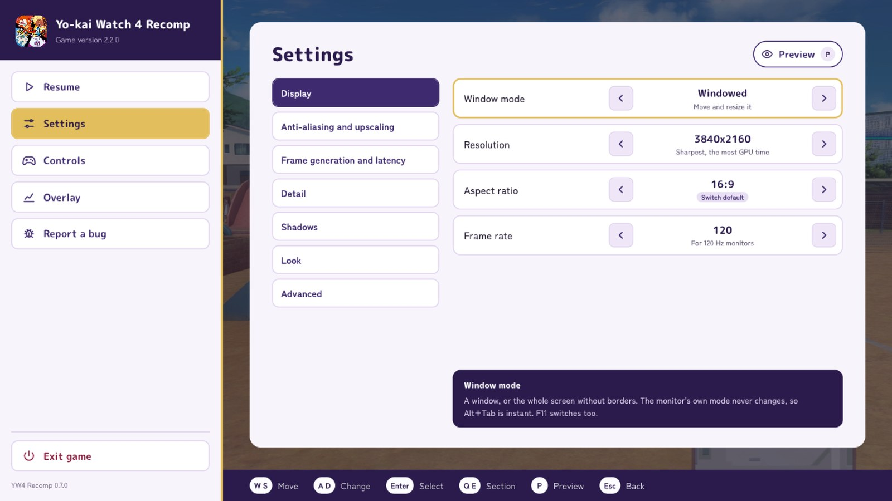
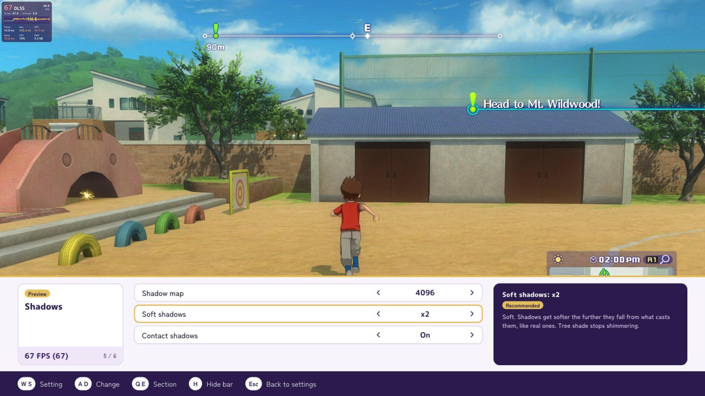
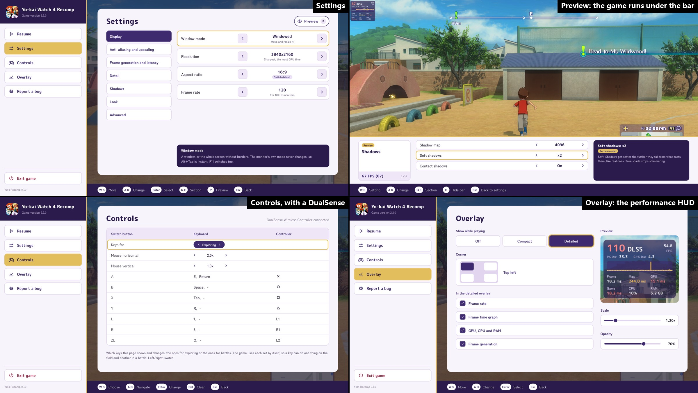
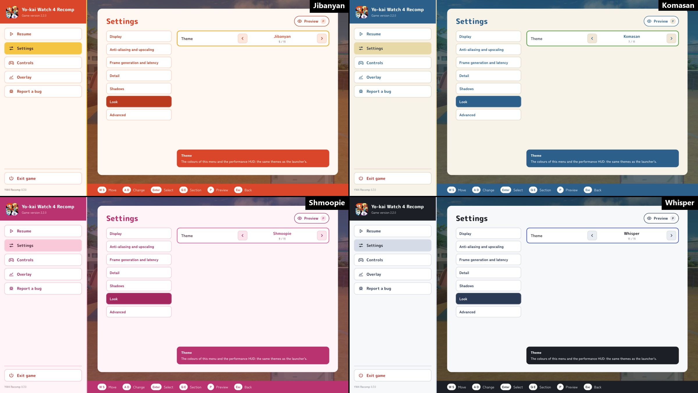

Everything around the game, made for the PC: the launcher that builds and updates it, and the overlay that opens over the game with every setting.
From your game files to Play More




Escape pauses the game and opens it, with full mouse and controller support More



